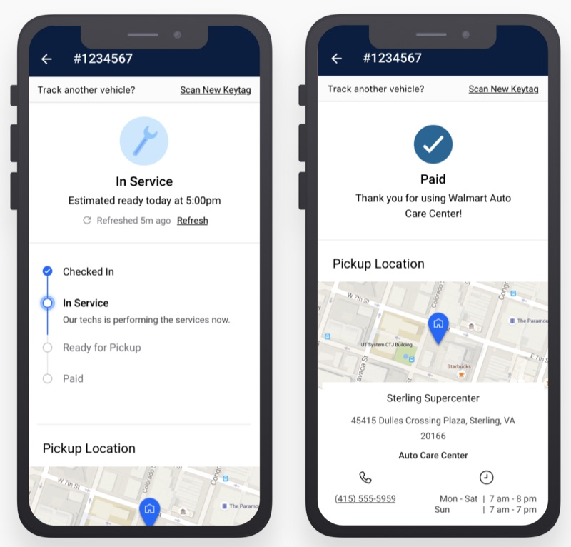
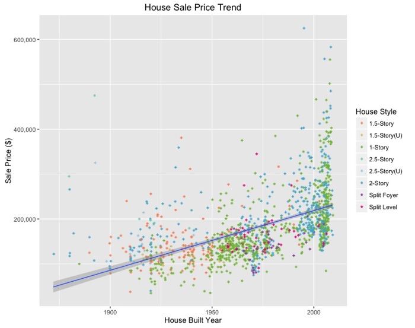
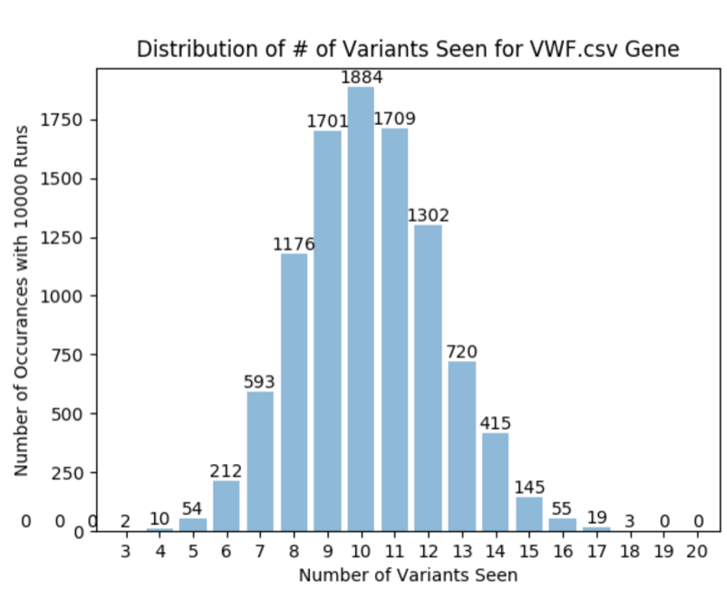
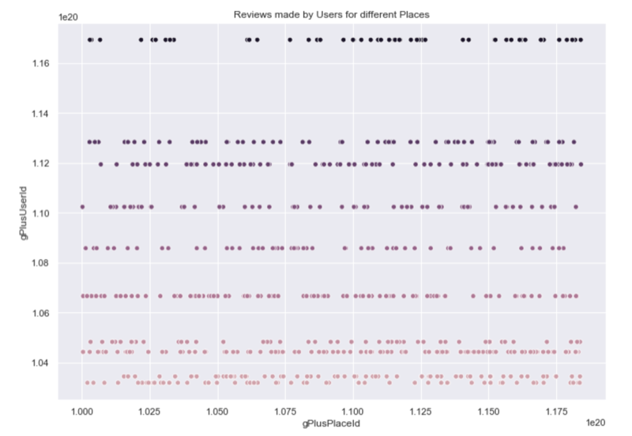
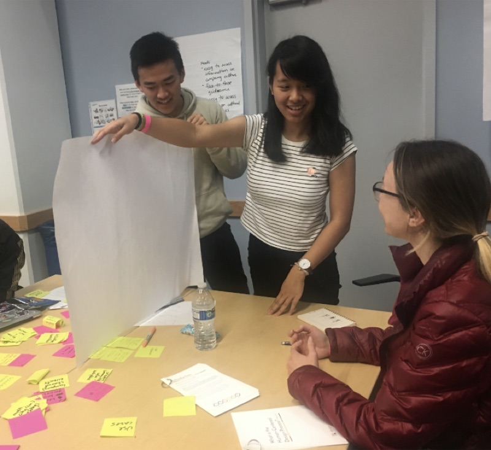

Experience & Projects
These are various work experiences and projects that I've worked on. I am always looking for new opportunities so feel free to reach out to me!

Walmart Labs
For Walmart Labs, I built a feature application that allows over 35 million customers a year to track the status of their car order.
I'm really proud of this project because I worked from end to end and created both the frontend and backend.
I was guided by Full-time engineers but was allowed to take full ownership of the project.
After completion, I demoed the app in front of over 500 employees in two different Senior VP conferences.
I enjoyed juggling the different teams I had to work with and learning new technologies throughout the project.
I worked with UI/UX, app integration teams, IOS, Android, backend security, store directors, and marketing.

Cazador Investments, LLC
• Feature selected based on industry knowledge, cleaned, and classified 80k properties with 40 columns of housing data points. Used Sci-kit Linear Regression on subsets to predict undervalued,potentially high Return-on-Investment
off market acquisitions
• Increased acquisition response rate by 23% and reduced acquisition costs by 6%

Machaon Diagnostics
• Evaluated Poisson distribution on empirically generated models in Python using Pandas/SciPy for genetic data to analyze normalized curves for the expected number of mutations in a specific
gene, was included in a validation
research paper

Datathon - Google Local Recommender
• Feature selected 3 important factors (rating, distance, num reviews) after Exploratory Data Analysis
• Built a cosine similarity recommender to pair similar users and suggest businesses

Universal React Web App
• React Web-App using both Client and Server-side rendering which allows loading with or without JavaScript enabled. Optimizes speed, usability, and SEO. Deployed through Heroku app

UCSD Designathon Design Frontier
• Collaboratively designed a possible innovative solution to a design brief
• Utilized the large immersive screen to improve communication in virtual meetings